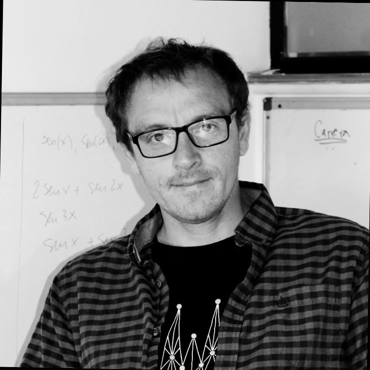
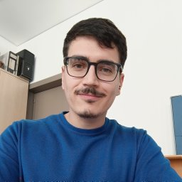

This workshop brings together whole-brain modelling and high-order interaction analysis to study
human neuroimaging data beyond pairwise descriptions. Through reproducible Python workflows, we will
combine theory-driven simulations with multivariate descriptors of collective brain dynamics to better
capture individual variability, explore brain health, and support more mechanistic analyses of M/EEG
and fMRI data.
About the Workshop
Four days of lectures, posters, flash talks, and a collaborative project sprint in computational neuroscience.
The workshop focuses on practical methods for modeling human brain activity and extracting
high-order descriptors from neuroimaging data. Its goal is to help participants build reproducible
Python workflows, connect models with empirical data, and turn individual variability into a useful
signal for brain health research.
Hands-on training in whole-brain modelling and high-order interaction methods.
Integration of theory-driven simulations with empirical M/EEG and fMRI analysis.
Poster sessions and flash talks to share ideas and exchange feedback early in the workshop.
The final day will be devoted to developing scientific project proposals and forming collaborative groups.
Targeted at students and early-career researchers with experience in scientific Python programming.
Invited Speakers
Nine experts in computational neuroscience and brain modeling.

Rodrigo Cofré
Inria Centre at Université Côte d'Azur
Rodrigo Cofré is a scientist at the Inria Centre at Université Côte d'Azur, specializing in
neuroscience and the mathematical modeling of the brain. His research explores the intricate mechanisms
that shape cognition and behavior, seeking to unravel how neural networks give rise to consciousness.
He has worked on mathematical models that capture the dynamic interactions between neurons and large-scale
brain networks in patients and healthy volunteers across general anesthesia, sleep, disorders of consciousness,
and psychedelic experiences.
Joana Cabral is an Assistant Professor and Principal Investigator at Instituto Superior Técnico,
University of Lisbon. Her research focuses on large-scale brain dynamics, functional connectivity,
and computational modelling of fMRI signals in relation to cognitive function and mental health.
She developed LEiDA and the Metastable Oscillatory Modes framework, and received the L'Oréal
UNESCO Award for Women in Science in 2019.
Pompeu Fabra University / CONICET / Universidad de San Andrés
Dr. Yonatan Sanz Perl is a physicist and computational neuroscientist, currently an Associate Professor
at the Universidad de San Andrés and an Assistant Researcher at CONICET, Argentina. He holds a
Bachelor's and a Ph.D. in Physics from the Universidad de Buenos Aires (UBA). He investigates how the
human brain organizes itself to sustain complex behaviors and how these dynamics are altered in different
states of consciousness and pathologies, applying concepts of physics, computational modeling, and
machine learning.
Marilyn Gatica is an Assistant Professor in Artificial Intelligence and Data Science at Northeastern
University London. She holds degrees in mathematics and a double PhD in Computational Neuroscience,
and teaches courses in Artificial Intelligence and Data Analysis. Her research develops integrative
computational approaches to brain modelling for personalised medicine, drawing on network science,
information theory, complex systems, whole-brain modelling, data analysis, and machine learning.
Kaichao Wu
IFISC, Spain
Dr Kaichao Wu earned his PhD from RMIT University, Australia. His research interests include computational
modelling, particularly brain systems and network dynamics. He is especially interested in computational
and systems neuroscience approaches applied to multimodal brain neuroimaging data and how these techniques
reveal neural behaviours. Kaichao also has a specific interest in how these methods can inform medical care,
particularly in relation to post-disease functional impairment and recovery applications.
Rubén Herzog is a Beatriz Galindo Distinguished Professor at the University of the Balearic Islands
and a researcher at IFISC. His work investigates brain dynamics through mathematical modelling and
information theory, with a focus on consciousness, sleep, neurodegeneration, and population-level
brain health. He has worked on neurodegeneration, high-order interactions, sleep physiology,
insomnia, hypersomnia, and large-scale polysomnographic datasets.
Carlos Coronel is a Research Fellow at Trinity College Dublin. He holds a B.Sc. in Biology and a
Ph.D. in Biophysics and Computational Biology, and has worked at BrainLat and the Trinity College
Institute of Neuroscience. His research focuses on computational approaches to aging and dementia,
combining brain clocks, machine learning, graph theory, and biophysical whole-brain modelling.
Xiaoge Bao
IDIBAPS
Xiaoge Bao studied Applied Mathematics at Hohai University (BSc, 2016-2020) and Fudan University
(PhD, 2020-2025), where she trained with Prof. Wei Lin and Prof. Wei P. Dai on complex systems and
computational neuroscience. Her research focuses on the analysis of network dynamics, especially in
neuroscience. In 2026, she joined the lab as a postdoc, working with Prof. Albert Compte. Outside of
research, she enjoys trying different sports, especially hiking and street dancing.

Raúl de Palma
Teaching Assistant IFISC
Raúl de Palma is a physicist specialized in nonlinear dynamics and complex networks, with a Ph.D.
in Theoretical Physics focused on neuronal modeling and network inference. His research bridges physics,
neuroscience, and data science, including work on synchronization, oscillatory systems, and Bayesian methods
for analyzing neural data. He has contributed to international collaborations and interdisciplinary projects
in Europe and Latin America, developing computational models for brain dynamics and clinical applications in
neurostimulation. Currently as a postdoctoral researcher at IFISC, he works at the interface of complex systems
and biomedical modeling, focusing on neurostimulation.
Programme
Four days, 10:00–18:30.
Tue 17 Nov
Wed 18 Nov
Thu 19 Nov
Fri 20 Nov
10:00–10:30
Rodrigo Cofré Opening Lecture Whole brain models and high-order interactions to understand brain function
Carlos Coronel Tutorial: theory Brain clocks
Marilyn Gatica Tutorial: theory Brain high-order interactions
Group projects proposals
10:30–11:00
Kaichao Wu Opening Lecture Modelling brain criticality in health and disease
Carlos Coronel Tutorial: theory Brain clocks
Marilyn Gatica Tutorial: theory Brain high-order interactions
Group projects proposals
11:00–11:30
Coffee break
11:30–12:30
Yonatan Sanz-Perl Opening Lecture Brain modelling to understand the physics of cognition in health and disease
Carlos Coronel Tutorial: hands-on Brain clocks
Marilyn Gatica Tutorial: hands-on Brain high-order interactions
Group projects proposals
12:30–14:00
Lunch
14:00–15:00
Joana Cabral Opening Tutorial: theory Beyond networks: functional connectivity as eigenmode resonance
Xiaoge Bao Tutorial: theory Propagation of perturbations in brain networks
Rubén Herzog Tutorial: theory HOI-based digital twins
Group projects proposals
15:00–15:30
Break
Coffee break
15:30–16:30
Joana Cabral Opening Tutorial: hands on Beyond networks: functional connectivity as eigenmode resonance
Xiaoge Bao Tutorial: hands on Propagation of perturbations in brain networks
Rubén Herzog Tutorial: hands-on HOI-based digital twins
Proposal presentations
16:30–17:00
Flash talks
Flash talks
Flash talks
Proposal presentations
17:00–18:30
Coffee & Posters
Coffee & Posters
Coffee & Posters
Farewell cocktail
How to Apply
Open to students and early-career researchers. No registration fee.
Who can apply
The workshop is primarily aimed at Master, PhD students, and for postdoctoral researchers. Applicants should have practical experience in scientific Python programming
and an interest in neuroimaging, computational neuroscience, complex systems, or mathematical modeling.
Prior expertise in whole-brain modeling or high-order interaction methods is not required.
Total capacity is 40 selected participants.
Application materials
Applications should include:
Curriculum vitae
Brief project proposal for the workshop
Poster abstract
Selection will be made by the organizers based on the application materials and the proposed project.
Participants will be notified by email. There is no registration fee. Participants should bring their
own laptop and will receive installation instructions and tutorial materials before the workshop.
Rubén Herzog Profesor Distinguido Beatriz Galindo, Department of Psychology, Universitat de les Illes Balears (UIB), Spain Institute for Cross-Disciplinary Physics and Complex Systems (IFISC), Spain
Raúl de Palma For inquiries contact rauldepalma@ifisc.uib-csic.es IFISC, Spain
Support
María de Maeztu Program for units of Excellence in R&D, grant CEX2021-001164-M funded by MICIU/AEI/10.13039/501100011033.
Programa de ayudas para la realización de congresos, UIB.